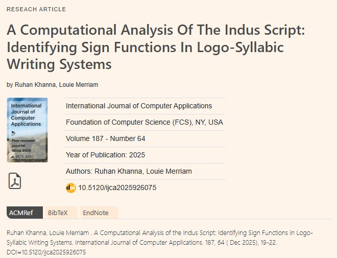
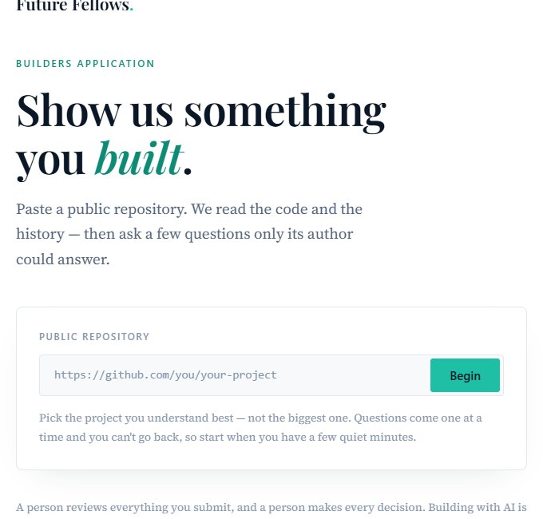

fig. 0 · where each project started and where it is now. six of the eight are in use.
01athletiq
2023 – now
founder · started it freshman year
software that college coaches use to find, predict, and manage recruits.
deployed at
stanford
harvard
unc
georgetown
texas
haverford
conn college
berry
lakeland
and more
backed by
and angel investors
9
ncaa programs with signed contracts
$30k
raised from angels, microsoft and aws
2
products, athletiq for coaches and pan-out for prospects
as a high school runner, i kept seeing inefficiencies and inaccuracies in the evaluation of runners, especially in recruiting. once i spoke to college coaches, i saw the problem extends to the coach side too.
athletiq uses data from past race results, wearables, and intake questionnaires to predict the physical ceiling of a runner, along with long-term trends and other factors such as clutch performance and consistency. advanced search also helps programs find recruits that fit their team's makeup and improve efficiency in the outreach process.
our newest product, pan-out, uses similar prediction models to estimate how good a junior tennis, chess, baseball, or hockey player will become, based on wearable data and similarity to former successful juniors. pan-out is being piloted at multiple ncaa programs for recruiting. in the future we aim to sell to brands seeking endorsement deals with junior players, too. that's what brought me to an ays sports event in new york on the future of tennis brand deals, where pan-out was part of the conversation. it's also where i met carlos alcaraz!
first author, with prof. adam tashman, uva school of data science
a model that predicts which investors fit a startup, a paper on where it goes wrong, and the matching software i built from it for founders venture capital tends to overlook.
20,000+
founders worldwide use it
60.3%
of real investors were in the model's top 10
6
median rank of the investor who actually invested
1 · the research
with prof. tashman, i trained a ranking model on crunchbase data covering about 62,000 startups, 48,000 investors and 150,000 funding rounds. for each startup it ranks every investor by how likely they are to invest, using 16 features such as stage, check size, location and how close the startup is to what the investor has backed before.
then we studied where the model was wrong. for each real deal, we looked at how far down the list the investor who actually invested sat, and called that gap the mismatch distance. most deals land close. the real investor was in the model's top 10 in 60.3% of deals, with a median rank of 6. the misses aren't random, though. mismatch runs higher at later stages and changes with region and with who the founder is. founders in the middle east and north africa saw the most of it, and founders in southeast asia the least. i presented the paper at uva's undergraduate research symposium and at the 10th international conference on advanced research in management, business and finance (icmbf).
2 · the software
i wanted to close that gap, so i turned the model into meridian, a matching tool. a founder enters their startup, and meridian runs it through the same model to surface the investors who fit best and, based on the same features, are most likely to invest. i gave it to accelerators and organizations that work with underrepresented founders, and more than 20,000 founders now use it.
the indus valley script is 4,500 years old and has gone undeciphered since it was discovered over a century ago, partly because it's "logosyllabic," meaning its characters represent both sounds and whole words. louie and i built a statistical method that sorts its characters into likely words and likely sounds, a breakthrough for future decipherment attempts.
ev
emergent ventures grant, 41st cohort
published
int'l journal of computer applications, dec 2025

the paper in the international journal of computer applicationshow it works 1 figure
i started an electric race car team at sidwell. i found an old club listing on the school website, talked a few friends and two teachers into it, and we built a car and raced it.
$7k
raised from sponsors
1st
"best use of 3d printing," a first for the school
48 v
four lead-acid batteries, one hour, one charge
the dc electric vehicle grand prix goes to whoever drives farthest in an hour on one battery. we rebuilt our kit car with an aluminum chassis, a new battery pack, 3d-printed wheel covers and an arduino that tells the driver how hard to push.
fig. 5 · the car, taken apartdrag to turn · slide to explode
exploded
i modeled this by hand from our photos, so it's close but not exact.how the pacing works 1 figure
fig. 6 · pacing to an energy budgetdrag the speed
each lap, the arduino divides the remaining battery by the laps left and tells the driver to speed up or back off. the car in this simulation uses estimated numbers, not measurements from ours.
beyond working on investment diligence, i was tasked with building a custom chatbot for portfolio founders, trained on hundreds of internal documents, memos, and recordings, to answer founders' questions.
150–200
founders and portfolio companies using it
696
talks, memos and recordings indexed
$0.005
cost per answer
it answers only from passages that closely match the question, and cites everything. when nothing matches well, it says the library doesn't cover it.
fig. 7 · how much evidence it needsdrag the match score
06gmu research · tdx
summer 2025
gmu assip · with prof. jiasun li, costello college of business
under professor li, i researched a new way to police fraud in academia. i re-ran published management science papers inside intel tdx machines, which sign a record of the exact code that ran. that record could let a journal check that a paper's shared code really produced its results.
19 / 27
papers re-ran and matched
$1.33
in cloud credits per paper
~2 hr
per run, on azure and google cloud
most of the eight failures came from data or a software license missing from the replication package.
a free ten-minute assessment that reads a student's code and git history, then asks questions only the author could answer.
40+
students in the pipeline, being placed into paid work
10 min
start to finish, free
5
questions written for each repo

where a stackup run starts
future fellows is a startup nonprofit fellowship placing talented young people into paid projects with employers. too often, a young applicant's résumé is misleading, so i built stackup, an evaluation model that scores an applicant's repo and git history. it then asks the applicant specific questions about the code to check that they understand the work, and grades their answers.
an app that tells refugee families in dc, maryland and virginia what to say if police stop them or someone knocks on the door.
500+
families reached through iroc
6
languages, including dari, arabic and urdu
i work with kids at iroc, like those in the photo below. i'm a camp counselor and tutor for refugee youth year-round. i also built an app for their parents, in response to a wave of police and ice encounters in the area. it gives them quick english translations of important phrases during an encounter and keeps their legal documents organized.

 stanford
stanford